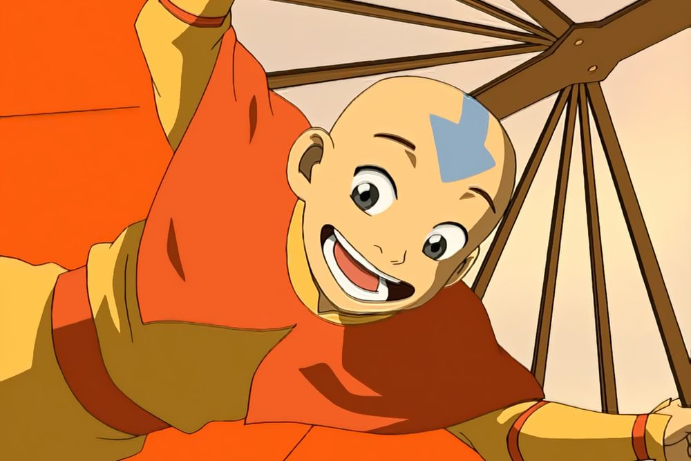
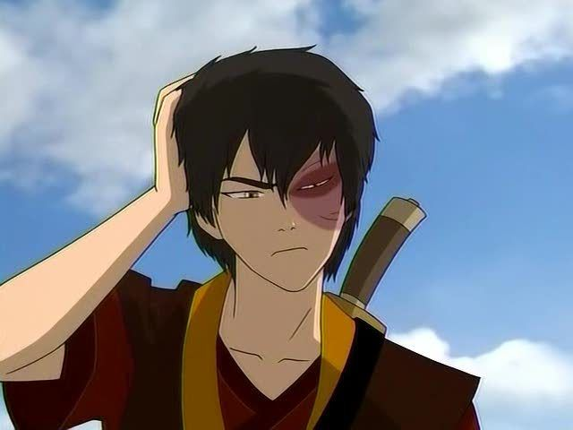
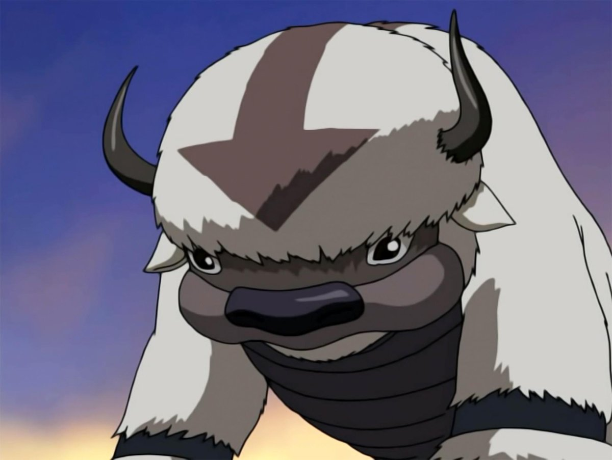
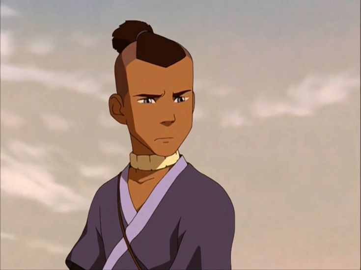
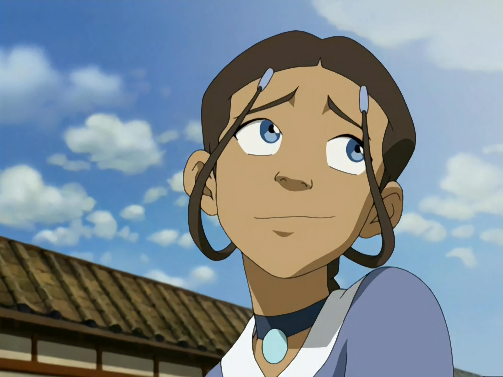
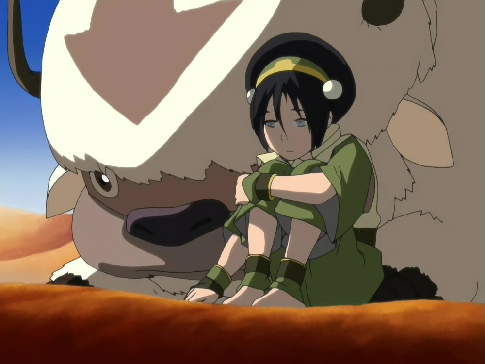

Американский приключенческий сериал в жанре фэнтези
Всего 2 сезона, по 12 серий в каждом из них.
Он является Аватаром - человеком, способным использовать все четыре вида магии:воздуха, воды, земли и огня.
Он мастер магии огня, родившийся принцем в Королевской семье Нации Огня. Его легко узнать по шраму от ожога на левой стороне лица, который он получил от отца за отказ драться во время их Агни Кай
Летающий зубр и зверь-хранитель Аанга.
Член команды Аватара, сын вождя Южного Племени Воды. Брат Катары, друг Аанга и Тоф.
Дочь вождя Южного Племени Воды Хакоды и единственный маг воды на Южном полюсе. У неё есть старший брат Сокка.
единственный ребёнок в семье. Тоф родилась слепой и с самого детства была окружена постоянной заботой и вниманием. Тоф нашла себя в магии земли и, благодаря ей, научилась видеть окружающий мир.
